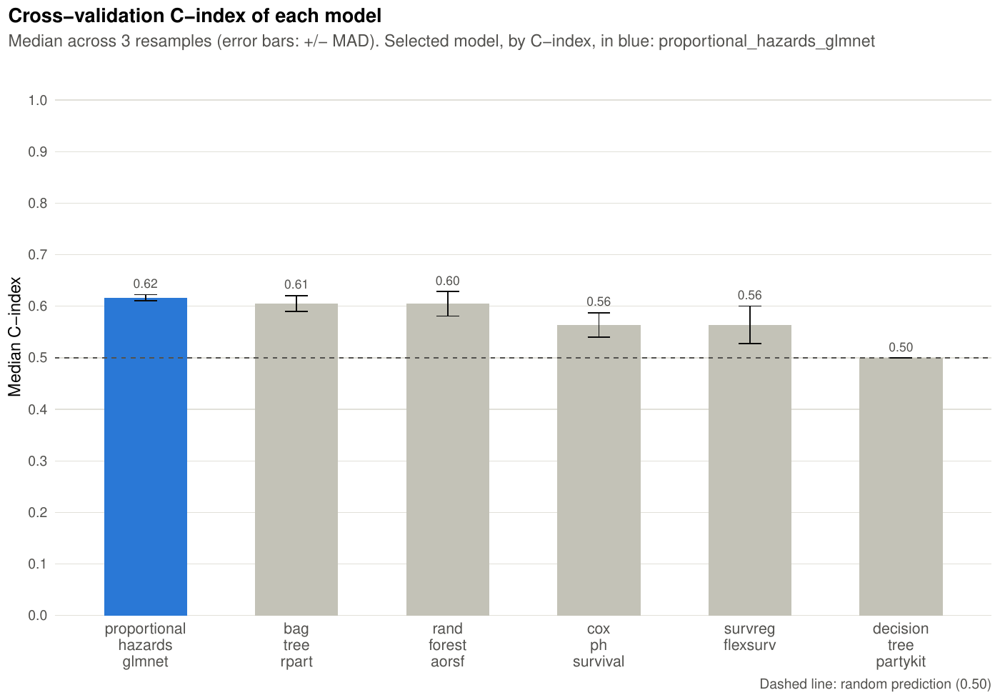
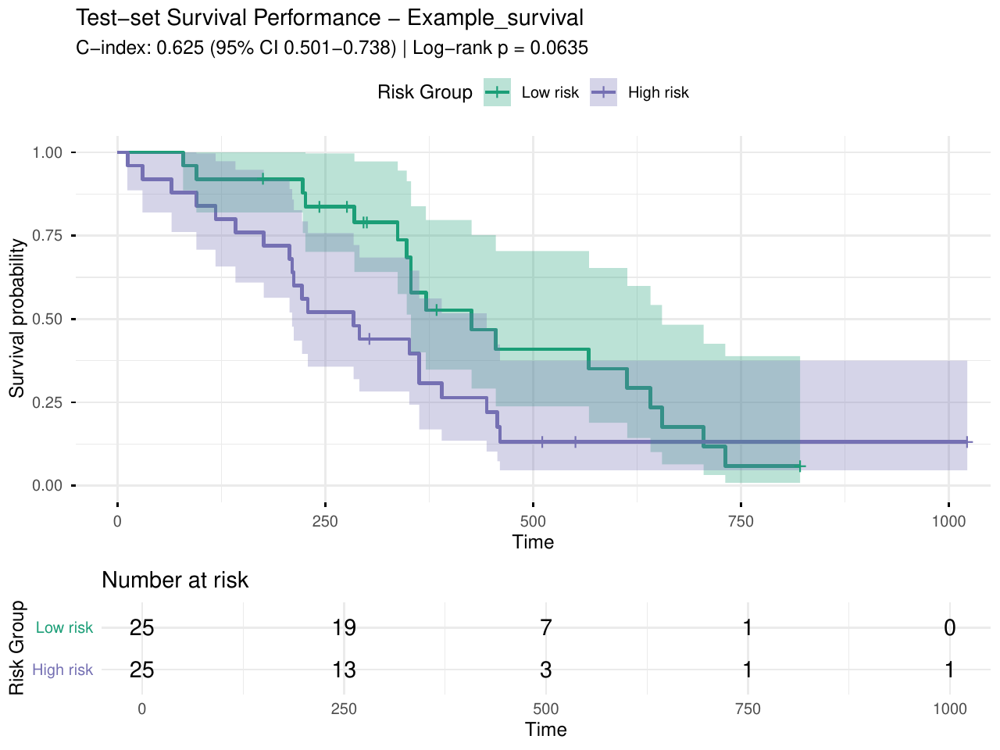
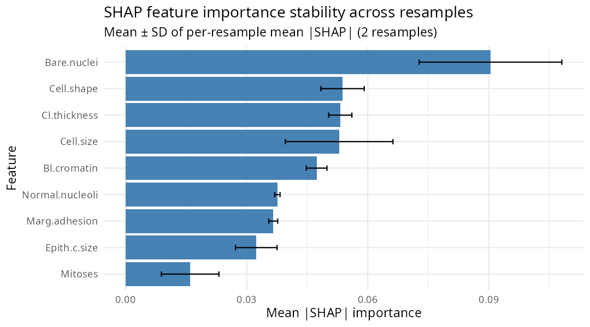

pipeML
pipeML.Rmd
library(pipeML)
library(dplyr)
#>
#> Attaching package: 'dplyr'
#> The following objects are masked from 'package:stats':
#>
#> filter, lag
#> The following objects are masked from 'package:base':
#>
#> intersect, setdiff, setequal, union
library(doParallel) # also attaches foreach, used by the custom fold functions with tunable parameters
#> Loading required package: foreach
#> Loading required package: iterators
#> Loading required package: parallelThis vignette demonstrates how to use pipeML to train,
tune, evaluate and interpret machine learning models for classification
and survival tasks.
Get Started
pipeML provides three core functions:
-
compute_features.training.ML(): train and tune models on a training set with repeated k-fold cross-validation, and select the best model. -
compute_prediction(): evaluate the selected model on a test set. -
compute_shap_values(): explain the selected model with SHAP values computed on the cross-validation folds.
If you already have a test set prepared,
compute_features.ML() performs training and prediction in
one step.
Which workflow should I use?
pipeML supports three ways of building the features used
inside cross-validation:
| Workflow | When to use it | Section |
|---|---|---|
| Standard | Your features are fixed values per sample (e.g. clinical variables, cell-type proportions computed per sample). | Classification, Survival |
| Custom folds, no tunable parameters | Your features are computed from several samples at once (e.g. clustering, PCA, co-expression modules), so they must be recomputed inside each fold to avoid leakage. | Custom folds |
| Custom folds with tunable parameters | As above, and the feature construction has parameters you want to tune (e.g. number of components, module size). | Tunable parameters |
All three workflows work for both classification and survival tasks, and all of them support prediction on a test set and SHAP values.
Results (plots, fold models) are written to a Results/
folder in the working directory.
Classification Tasks
Load example data:
data = pipeML::data_example_classification
X <- data %>% dplyr::select(-target)
y <- data$targetFor this example, make a train/test split:
set.seed(123)
train_idx <- caret::createDataPartition(y, p = 0.7, list = FALSE)
X_train <- X[train_idx, ]
X_test <- X[-train_idx, ]
y_train <- y[train_idx]
y_test <- y[-train_idx]Train Models
Train and tune models using repeated stratified k-fold
cross-validation. trait.positive is the value of
target_var considered as the positive class, and
metric is the metric used to select the best model
("AUROC", "AUPRC" or
"Accuracy"):
res <- compute_features.training.ML(features_train = X_train,
target_var = y_train,
task_type = "classification",
trait.positive = "1",
metric = "AUROC",
k_folds = 2,
n_rep = 1,
ncores = 2,
file_name = "Example_classification",
return = FALSE)Access the best-trained model:
res$ModelView all trained and tuned machine learning models:
names(res$ML_Models)res$AUROC_median and res$AUPRC_median
compare the cross-validation performance of all the algorithms. The
cross-validation performance of the selected model, per resample, is in
res$Model$resample:
res$AUROC_median
head(res$Model$resample)
Figure 1. Models training performance.
Predict On Test Data
After training, predict on new data with
compute_prediction(). The test data must contain the same
features used for training:
pred = compute_prediction(model = res$Model,
test_data = X_test,
target_var = y_test,
task_type = "classification",
trait.positive = "1",
file.name = "Example_classification")AUROC and AUPRC on the test set, with bootstrap confidence intervals:
pred$AUCCheck predictions:
head(pred$Predictions)Inspect threshold-based prediction metrics:
head(pred$Metrics)If return = TRUE, compute_prediction()
saves ROC and PR curves in the Results/ directory.

Figure 2. ROC curve.

Figure 3. PR curve.
Compute SHAP Values
SHAP values explain which features drive the predictions of the
selected model (see Interpreting models with
SHAP values for details and plots). Everything
compute_shap_values() needs (training data, outcome,
cross-validation folds, tuned hyperparameters) is taken from the trained
model, so only the model needs to be passed:
shap_classification <- compute_shap_values(model_trained = res$Model,
task_type = "classification",
n_cores = 2)
head(shap_classification)Survival Tasks
In addition to classification, pipeML supports survival
analysis, allowing users to train machine learning models that predict
time-to-event outcomes.
In survival analysis, the response variable is defined by two components:
- Time: follow-up or survival time
- Event: indicator of whether the event occurred (1) or the observation was censored (0)
Note: survival models are built on the
censored extension of parsnip. It must be
installed, but you don’t need to load it — pipeML loads it
automatically when a survival task runs.
install.packages("censored") # only needed once, if not already installedLoad example dataset for survival. In this dataset
(survival::lung), status is coded 1 = censored
and 2 = death, so we recode it as 0/1:
data = pipeML::data_example_survival
X <- data %>% dplyr::select(-time, -status)
time <- data$time
event <- ifelse(data$status == 2, 1, 0)Similar to the previous example, split data into train/test:
set.seed(123)
train_idx <- caret::createDataPartition(event, p = 0.7, list = FALSE)
X_train <- X[train_idx, ]
X_test <- X[-train_idx, ]
time_train <- time[train_idx]
time_test <- time[-train_idx]
event_train <- event[train_idx]
event_test <- event[-train_idx]Train Models
The function compute_features.training.ML() can also
train survival models by setting task_type = "survival".
The best model is selected by the concordance index (C-index):
res_survival <- compute_features.training.ML(
features_train = X_train,
task_type = "survival",
time_var = time_train,
event_var = event_train,
k_folds = 2,
n_rep = 1,
file_name = "Example_survival",
ncores = 2
)Access the best model:
names(res_survival$ML_Models)
res_survival$Model$model
res_survival$Model$Model_objectCheck training metrics:
res_survival$C_index_median
head(res_survival$Model$Prediction_folds)
Figure 4. Models training performance.
Predict On Test Data
After training, predictions can be generated using
compute_prediction().
pred_survival <- compute_prediction(
model = res_survival$Model,
test_data = X_test,
task_type = "survival",
time_var = time_test,
event_var = event_test,
file.name = "Example_survival")
pred_survival$c_indexUnlike classification models, survival models may return different types of predictions depending on the model used. Some models predict a risk score, while others predict expected survival time or survival probability.
The compute_prediction() function automatically handles
these differences. Internally, it attempts several prediction types and
converts them into a standardized risk score so that results can be
compared across models:
- Risk score (linear_pred) – typically produced by Cox models. Higher values indicate higher predicted risk.
- Predicted survival time (time) – produced by some parametric survival models. Higher values indicate longer survival, so the values are internally reversed to represent risk.
- Survival probability (survival) – probability of surviving at a given time point. Higher probabilities correspond to lower risk, so these values are also internally reversed.
After this standardization step, predictions are always interpreted in the same way:
Higher prediction values correspond to higher predicted risk
This allows pipeML to compute performance metrics such
as the concordance index (C-index) and to stratify patients into risk
groups for Kaplan–Meier visualization (saved in Results/
when return = TRUE).

Figure 5. KM plot.
Compute SHAP Values
compute_shap_values() works the same way with
task_type = "survival". The training data is taken from the
trained model (res_survival$Model$trainingData), so only
the model needs to be passed. SHAP values are in risk-score units:
positive values push the prediction towards higher risk.
shap_survival <- compute_shap_values(model_trained = res_survival$Model,
task_type = "survival",
n_cores = 2)
head(shap_survival)One-Step Training and Prediction
If a separate testing dataset is already available,
compute_features.ML() trains the models (with
hyperparameter tuning and model selection on the training data) and then
applies the selected model to the test data in a single step. The
outcome is read from coldata, whose row names must be the
sample names of the feature tables.
Classification Example
data = pipeML::data_example_classification
X <- data %>% dplyr::select(-target)
y <- data$target
set.seed(123)
train_idx <- caret::createDataPartition(y, p = 0.8, list = FALSE)
X_train <- X[train_idx, ]
X_test <- X[-train_idx, ]
res_onestep <- compute_features.ML(features_train = X_train,
features_test = X_test,
coldata = data,
task_type = "classification",
trait = "target",
trait.positive = "1",
metric = "AUROC",
k_folds = 2,
n_rep = 1,
ncores = 2,
file_name = "Test",
return = FALSE)
res_onestep$AUCSurvival Example
data = pipeML::data_example_survival
data$event <- ifelse(data$status == 2, 1, 0) # 1 = death, 0 = censored
X <- data %>% dplyr::select(-time, -status, -event)
set.seed(123)
train_idx <- caret::createDataPartition(data$event, p = 0.7, list = FALSE)
X_train <- X[train_idx, ]
X_test <- X[-train_idx, ]
res_onestep_survival <- compute_features.ML(features_train = X_train,
features_test = X_test,
coldata = data,
task_type = "survival",
time_var = "time",
event_var = "event",
k_folds = 2,
n_rep = 1,
ncores = 2,
file_name = "Test",
return = FALSE)
res_onestep_survival$C_indexInterpreting Models with SHAP Values
What are SHAP values?
SHAP (SHapley Additive exPlanations) values quantify how much each feature contributed to pushing a given prediction away from the average prediction. They are grounded in cooperative game theory: each feature is treated as a “player”, and its SHAP value represents its fair share of the prediction.
For a single sample, SHAP values decompose the prediction as:
prediction(sample) = average prediction + SHAP(feature_1) + SHAP(feature_2) + ... + SHAP(feature_p)A positive SHAP value means the feature pushed the prediction above average; a negative value means the opposite. The SHAP values of a sample always sum to the difference between its prediction and the average prediction.
SHAP values are in the units of the model output:
- Classification: probability of the positive class. A SHAP value of 0.05 means the feature raised the predicted probability by 5 percentage points.
- Survival: risk score. Positive values push towards higher risk.
How are SHAP values computed?
pipeML uses the fastshap package, which
estimates SHAP values via Monte Carlo sampling (100 simulations per
feature). For each sample and each feature, it asks: on average,
across random orderings of the features, how much does including this
feature change the prediction? When a feature is “absent”, it is
replaced by the value of a randomly drawn training sample.
Per-fold SHAP: why pipeML does it differently
Most SHAP workflows fit one final model on all data and compute SHAP values on training samples. This has a bias: the model already memorized those samples, so features that overfit will appear more important than they really are.
pipeML instead computes SHAP values per
cross-validation fold:
- For each resample, take the model trained on the training part of that fold (with the tuned hyperparameters).
- Compute SHAP values only on the held-out samples of that fold — samples the model never saw.
- After all folds, aggregate SHAP values per sample via the median across resamples.
How the fold model is obtained depends on the workflow:
- Standard workflow: the fold model is refitted on the training part of the fold.
-
Custom folds: the fold models are saved during
training (in
fold_models_dir, by defaultResults/fold_models/<task_type>) and loaded bycompute_shap_values(). They cannot be refitted, because their features were built from the training part of each fold. If a fold model is missing,compute_shap_values()stops with an error: pointfold_models_dirto the directory used during training, or retrain the model.
compute_shap_values() prints how many resamples were
loaded, refitted or skipped (a resample is skipped when the model
predicts the same value for all its held-out samples).
Running compute_shap_values()
We use the classification model trained above (res,
trained on data_example_classification). With
return_resamples = TRUE, the function also returns the SHAP
values of each resample:
shap_res <- compute_shap_values(model_trained = res$Model,
task_type = "classification",
n_cores = 2,
return_resamples = TRUE)shap_res$shap has one row per training sample and one
column per feature. Each value is the median SHAP value of the sample
across the resamples in which it was held out:
shap_classification <- shap_res$shap
head(shap_classification)shap_res$shap_resamples has one row per held-out sample
and resample:
head(shap_res$shap_resamples)Feature importance across samples
The global importance of a feature is its mean absolute SHAP value across samples:
The shapviz package provides standard SHAP plots. It
needs the SHAP values and the feature values of the same samples, which
are in the training data stored in the model:
X_shap <- res$Model$trainingData[rownames(shap_classification), colnames(shap_classification)]
sv <- shapviz::shapviz(as.matrix(shap_classification), X = X_shap)Global feature importance (bar plot):
shapviz::sv_importance(sv, kind = "bar") +
ggplot2::ggtitle("Global feature importance")
Figure 6. Global feature importance (mean |SHAP|).
Beeswarm plot: each point is a sample, placed by its SHAP value and coloured by its feature value. It shows both the importance and the direction of the effect (e.g. whether high values of a feature increase or decrease the prediction):
shapviz::sv_importance(sv, kind = "beeswarm") +
ggplot2::ggtitle("SHAP summary across samples")
Figure 7. SHAP values of all samples.
Dependence plot: SHAP value of a feature against its value, for the most important feature:
top_feature <- names(sort(colMeans(abs(shap_classification)), decreasing = TRUE))[1]
shapviz::sv_dependence(sv, v = top_feature)
Figure 8. SHAP dependence plot of the most important feature.
SHAP values of a single sample
A waterfall plot shows how the features of one sample move its
prediction away from the average prediction. Because pipeML
takes the median of each sample’s SHAP values across resamples, the plot
starts from 0 (E[f(x)]=0) instead of the average predicted
probability: f(x) is the total change in predicted
probability for that sample, and each bar is the contribution of one
feature:
shapviz::sv_waterfall(sv, row_id = 1) +
ggplot2::ggtitle(paste("Sample", rownames(shap_classification)[1]))
Figure 9. SHAP values of one sample (waterfall plot).
The same information as a force plot:
shapviz::sv_force(sv, row_id = 1)
Figure 10. SHAP values of one sample (force plot).
Stability of feature importance across resamples
plot_shap_stability() shows, for each feature, the mean
and standard deviation across resamples of its per-resample importance
(mean |SHAP| over the held-out samples of each resample). Features with
a large standard deviation are important in some folds only:
plot_shap_stability(shap_res$shap_resamples, top_n = 20)
Figure 11. Stability of feature importance across resamples.
Setting file.name in compute_shap_values()
or plot_shap_stability() also saves this plot as
Results/SHAP_stability_resample_<file.name>.pdf.
The same plots can be made for survival models, using
res_survival$Model$trainingData for the feature values.
Advanced
Leave-One-Dataset-Out (LODO) Analysis
If your data includes features from multiple cohorts,
pipeML provides a flexible approach to perform
Leave-One-Dataset-Out (LODO) analysis. This is achieved
by applying k-fold stratified sampling across batches, ensuring that
each fold preserves the batch structure while maintaining class balance.
To enable this, set LODO = TRUE and provide the batch of
each sample in batch_var.
Below, we demonstrate how to perform a LODO analysis using simulated datasets:
Simulate datasets from different batches (‘cohorts’)
set.seed(123)
# Simulate traitData with 3 cohorts
traitData <- data.frame(
Sample = paste0("Sample", 1:90),
Response = sample(c("R", "NR"), 90, replace = TRUE),
Cohort = rep(paste0("Cohort", 1:3), each = 30),
stringsAsFactors = FALSE
)
rownames(traitData) <- traitData$Sample
# Simulate some example features
features_all <- matrix(runif(90 * 15), nrow = 90, ncol = 15)
rownames(features_all) <- traitData$Sample
colnames(features_all) <- paste0("Feature", 1:15)Leave each cohort out in turn: train on the other cohorts and predict the left-out one
prediction = list()
for (cohort in unique(traitData$Cohort)) {
# Test cohort
traitData_test = traitData %>% filter(Cohort == cohort)
features_test = features_all[rownames(traitData_test), ]
# Train cohorts
traitData_train = traitData %>% filter(Cohort != cohort)
features_train = features_all[rownames(traitData_train), ]
#### ML Training
res_lodo = compute_features.training.ML(features_train = features_train,
target_var = traitData_train$Response,
task_type = "classification",
trait.positive = "R",
metric = "AUROC",
k_folds = 2,
n_rep = 1,
LODO = TRUE,
batch_var = traitData_train$Cohort,
ncores = 2,
return = FALSE)
#### Testing
prediction[[cohort]] = compute_prediction(model = res_lodo$Model,
test_data = features_test,
target_var = traitData_test$Response,
task_type = "classification",
trait.positive = "R",
return = FALSE)
}For plotting, we use get_curves(), adapted for multiple
cohorts. This function is used internally by
compute_prediction() to generate ROC and PR curves.
Extract prediction metrics and join
roc_data <- lapply(names(prediction), function(cohort) {
df <- prediction[[cohort]]$Metrics
df$cohort <- cohort
df
}) %>% dplyr::bind_rows()
auc_roc <- list(
estimate = sapply(prediction, function(x) x$AUC$AUROC$estimate),
lower = sapply(prediction, function(x) x$AUC$AUROC$lower),
upper = sapply(prediction, function(x) x$AUC$AUROC$upper)
)
auc_prc <- list(
estimate = sapply(prediction, function(x) x$AUC$AUPRC$estimate),
lower = sapply(prediction, function(x) x$AUC$AUPRC$lower),
upper = sapply(prediction, function(x) x$AUC$AUPRC$upper)
)Plot ROC and PR curves:
get_curves(
data = roc_data,
color = "cohort",
auc_roc = auc_roc,
auc_prc = auc_prc,
LODO = TRUE,
file.name = "LODO_cohort_example",
width = 9,
height = 9
)
Figure 12. LODO ROC curves.

Figure 13. LODO PR curves.
Leakage-Aware Custom Cross-Validation
A central design principle of pipeML is to prevent
information leakage during model training and evaluation. In many
machine learning workflows, feature engineering steps are applied to the
full dataset before cross-validation, which can inadvertently introduce
information from the test folds into the training process. This leads to
overoptimistic performance estimates.
To address this, pipeML provides built-in support for
custom fold construction through the fold_construction_fun
argument in compute_features.training.ML(). This mechanism
allows feature engineering and preprocessing steps to be recomputed
independently within each cross-validation fold, ensuring that test
samples never influence the training process.
This capability is a core component of the pipeML
pipeline, enabling leakage-aware model development for
datasets where features depend on the full sample structure.
Why custom fold construction is important?
In many biological and high-dimensional datasets, features are not independent variables but are derived from the data itself. Examples include:
- correlation-based clustering
- dimensionality reduction (e.g., PCA)
- gene set enrichment or pathway scoring
- transcription factor activity inference
- aggregation of features across samples
If these transformations are applied to the entire dataset before cross-validation, the test samples influence how the feature space is constructed. As a result, the model indirectly “sees” information from the test data during training.
By recomputing these steps within each fold, pipeML
ensures that:
- training data are used to define the feature space
- test samples are projected onto the learned space without influencing it
- model evaluation reflects true out-of-sample performance
This approach closely mimics how the model would behave when applied to completely unseen data, producing more realistic performance estimates.
Inside each fold, pipeML also removes near-constant and
highly correlated features (|r| > 0.9) from the features built on the
training part, and keeps the same features in the held-out part.
Step 1 - Define a base feature function
Structure of the Base Feature Function
The function is designed around two operational modes:
-
Training Mode (structure is
NULL): The function learns the feature structure from the input dataset. - Projection Mode (structure provided): The function applies a previously learned structure to new data.
Why the function returns two objects?
- features → always returned; the transformed representation of the current dataset (training or test).
- structure → the learned structure; needed to project test data in future steps.
This ensures a leakage-aware workflow:
- Training data defines the feature space.
- Test data is projected without altering the learned structure.
Structure of base function
- data: features as rows, samples as columns
-
structure: precomputed structure (e.g., clusters,
components);
NULLfor training - …: additional arguments specific to the algorithm used
compute_features_modular <- function(data, structure = NULL, ...) {
# TRAINING MODE
if (is.null(structure)) {
# -------------------- REPLACE THIS BLOCK --------------------
structure <- learn_structure(data, ...) # user-defined function
# -------------------- REPLACE THIS BLOCK --------------------
}
# PROJECT MODE
# -------------------- REPLACE THIS BLOCK --------------------
features <- project_data(data, structure, ...) # user-defined function
# -------------------- REPLACE THIS BLOCK --------------------
return(list(features = features, structure = structure))
}Here we illustrate a correlation-based feature computation using Weighted Gene Co-expression Network Analysis (WGCNA): genes are grouped into co-expression modules on the training samples, and each module is summarized by the first principal component of its genes. This is just an example: in practice, you can use any feature computation that depends on multiple samples, such as clustering, PCA, among others.
library(WGCNA)
compute_features_modular <- function(counts, power = NULL, modules = NULL) {
## Just preprocessing (IGNORE)
rownames(counts) <- gsub("-", ".", rownames(counts))
datExpr <- t(counts)
cor <- WGCNA::cor
# TRAINING MODE
if (is.null(modules)) {
# -------------------- REPLACE THIS BLOCK --------------------
net <- WGCNA::blockwiseModules(datExpr, power = power)
modules <- net$colors
names(modules) <- colnames(datExpr)
# -------------------- REPLACE THIS BLOCK --------------------
}
# PROJECT MODE
# -------------------- REPLACE THIS BLOCK --------------------
module_features <- sapply(sort(unique(modules)), function(mod) {
genes <- names(modules[modules == mod])
pc <- prcomp(datExpr[, genes, drop = FALSE])
pc$x[, 1]
})
# -------------------- REPLACE THIS BLOCK --------------------
## Just formatting (IGNORE)
colnames(module_features) <- paste0("Module_", sort(unique(modules)))
return(list(features = as.matrix(module_features), structure = modules))
}Step 2 - Make the function suitable for pipeML
We then need to extend and give the correct format to this function
to make it suitable for running across folds inside
pipeML.
This template provides a modular framework to prepare
cross-validation folds for pipeML in a leakage-aware way.
It separates training vs projection:
- Training mode: computes features and learns the data structure from the training folds
- Projection mode: applies the learned structure to held-out folds without influencing it.
Users can easily adapt this template by replacing their previous
compute_features_modular function.
NOTE
In pipeML data corresponds to samples as rows and
features as columns. If your compute_features_modular()
needs features as rows, make sure to t() inside this
function.
The parameters data, folds, and
bestune are handled by pipeML automatically
once fold_construction_fun is set. Do not change these
parameter names or remove them.
-
data: the training features. For classification, it
also contains the outcome in a
targetcolumn. - folds: named list with the training rows of each fold.
-
bestune:
NULLwhile running the folds; set bypipeMLwhen building the features of the final model (see below). - … : Additional parameters passed to your feature function
The function must:
- in fold mode (
bestune = NULL), save each fold asResults/fold_<fold name>.rds, with the training features (plus the outcome), the test features, the observed test outcome, the test row indices (rowIndex) and the fold name. - in final mode (
bestunenotNULL), return a list with the features of all training samples (plus the outcome), any output you want to keep (available asres$Custom_output) andbestune.
Make sure compute_features_modular() returns a matrix
with the features. If not, make sure to extract them before adding the
target column.
prepare_custom_folds <- function(data, folds = NULL, bestune = NULL, ...) {
if (!is.null(bestune)) {
obs_train <- data$target
data$target <- NULL
# -------------------- REPLACE THIS BLOCK --------------------
result <- compute_features_modular(data, ...)
# -------------------- REPLACE THIS BLOCK --------------------
train_features_final = as.data.frame(result$features)
train_features_final$target <- obs_train
custom_output <- result
return(list(train_features_final, custom_output, bestune))
} else {
processed_folds <- list()
for (i in seq_along(folds)) {
train_idx <- folds[[i]]
test_idx <- setdiff(seq_len(nrow(data)), train_idx)
train_data <- data[train_idx, , drop = FALSE]
obs_train <- train_data$target
train_data$target <- NULL
# -------------------- REPLACE THIS BLOCK --------------------
train_result <- compute_features_modular(train_data, ...)
# -------------------- REPLACE THIS BLOCK --------------------
train_features = as.data.frame(train_result$features)
train_features$target <- obs_train
test_data <- data[test_idx, , drop = FALSE]
obs_test <- test_data$target
test_data$target <- NULL
# -------------------- REPLACE THIS BLOCK --------------------
test_features <- compute_features_modular(
test_data,
structure = train_result$structure,
...
)
# -------------------- REPLACE THIS BLOCK --------------------
test_features = as.data.frame(test_features$features)
processed_folds[[i]] <- list(
train_data = train_features,
test_data = test_features,
obs_test = obs_test,
rowIndex = test_idx,
fold_name = names(folds)[i]
)
}
for (i in seq_along(processed_folds)) {
filename <- file.path("Results", paste0("fold_", names(folds)[i], ".rds"))
saveRDS(processed_folds[[i]], file = filename)
}
return(processed_folds)
}
}Here we illustrate how the function will look applying our
compute_features_modular() function.
Notice that each time I call the function
compute_features_modular() I am setting my additional
argument power:
prepare_WGCNA_folds <- function(data, folds = NULL, bestune = NULL, power) {
if (!is.null(bestune)) {
obs_train <- data$target
data$target <- NULL
# -------------------- REPLACE THIS BLOCK --------------------
wgcna_result <- compute_features_modular(t(data), power = power)
# -------------------- REPLACE THIS BLOCK --------------------
train_cell_data_final <- as.data.frame(wgcna_result$features)
train_cell_data_final$target <- obs_train
custom_output <- wgcna_result
return(list(train_cell_data_final, custom_output, bestune))
} else {
processed_folds <- list()
for (i in seq_along(folds)) {
train_idx <- folds[[i]]
test_idx <- setdiff(seq_len(nrow(data)), train_idx)
train_data <- data[train_idx, , drop = FALSE]
obs_train <- train_data$target
train_data$target <- NULL
# -------------------- REPLACE THIS BLOCK --------------------
train_result <- compute_features_modular(t(train_data), power = power)
# -------------------- REPLACE THIS BLOCK --------------------
train_features <- as.data.frame(train_result$features)
train_features$target <- obs_train
test_data <- data[test_idx, , drop = FALSE]
obs_test <- test_data$target
test_data$target <- NULL
# -------------------- REPLACE THIS BLOCK --------------------
test_features <- compute_features_modular(t(test_data),
modules = train_result$structure)
# -------------------- REPLACE THIS BLOCK --------------------
test_features <- as.data.frame(test_features$features)
processed_folds[[i]] <- list(
train_data = train_features,
test_data = test_features,
obs_test = obs_test,
rowIndex = test_idx,
fold_name = names(folds)[i]
)
}
for (i in seq_along(processed_folds)) {
filename <- file.path("Results", paste0("fold_", names(folds)[i], ".rds"))
saveRDS(processed_folds[[i]], file = filename)
}
return(processed_folds)
}
}Load data example. counts_example contains genes as rows
and samples as columns; we keep the samples annotated in
coldata_example, in the same order:
coldata = pipeML::coldata_example
counts = pipeML::counts_example[, rownames(coldata)]
set.seed(123)
train_idx <- caret::createDataPartition(coldata$Response, p = 0.7, list = FALSE)
counts_train <- counts[, train_idx]
counts_test <- counts[, -train_idx]
coldata_train <- coldata[train_idx, , drop = FALSE]
coldata_test <- coldata[-train_idx, , drop = FALSE]Step 3 - Run custom k-fold cross-validation
Once your custom fold function is ready, pass it to
compute_features.training.ML() via
fold_construction_fun.
The argument fold_construction_args_fixed corresponds to
the additional parameters of your fold function (in this example
power in prepare_WGCNA_folds()), set to the
value to use. If your function does not have any additional parameters,
you can omit this argument.
res_custom <- compute_features.training.ML(features_train = t(counts_train),
target_var = coldata_train$Response,
task_type = "classification",
trait.positive = "R",
metric = "AUROC",
k_folds = 2,
n_rep = 1,
ncores = 2,
return = FALSE,
fold_construction_fun = prepare_WGCNA_folds,
fold_construction_args_fixed = list(power = 6))Notice that res_custom$Custom_output contains the output
of your base function on the full training set, in case it is needed
(e.g. for prediction - see next step):
names(res_custom$Custom_output)
head(res_custom$Custom_output$features)
head(res_custom$Custom_output$structure)During cross-validation, the model of each fold is saved in
fold_models_dir (by default
Results/fold_models/classification or
Results/fold_models/survival), and only the files of the
selected model are kept. They are used by
compute_shap_values(). If you run several analyses of the
same task from the same working directory, give each one its own
fold_models_dir and pass the same directory to
compute_shap_values().
Step 4 - Prediction on test data
To apply the model to new data, compute the same type of features, projecting the test samples on the structure learned from the training set (here, the WGCNA modules):
test = compute_features_modular(counts_test, modules = res_custom$Custom_output$structure)
test_features = test$featuresPrediction
pred_custom <- compute_prediction(model = res_custom$Model,
test_data = test_features,
target_var = coldata_test$Response,
task_type = "classification",
trait.positive = "R",
file.name = "Custom_fold")
pred_custom$AUCStep 5 - SHAP values
The fold models saved during training are loaded, so no argument other than the model is needed:
shap_custom <- compute_shap_values(model_trained = res_custom$Model,
task_type = "classification",
n_cores = 2)
head(shap_custom)Tunable parameters within custom fold functions
In some scenarios, the feature construction step may include
parameters whose values can influence model performance. For example,
when computing WGCNA, parameters such as
soft-thresholding power, minimum module size,
module merging threshold, and
module splitting sensitivity may affect the resulting
features and therefore the downstream model performance.
To address this, pipeML supports hyperparameter tuning
within your custom fold functions. This allows users to identify which
parameter values lead to the best predictive performance.
Briefly, the user provides a grid of candidate parameter values, and
pipeML will:
- construct custom cross-validation folds for each parameter combination
- train and evaluate machine learning models for each configuration
- compare the resulting performance across folds and repetitions
- return the parameter values that maximize the selected performance metric
Before that, user needs to modify
compute_features_modular and
prepare_custom_folds() to account for all these
parameters.
For the compute_features_modular we are only going to
add the tunable parameters in our function call:
compute_features_modular <- function(
counts,
power = NULL,
modules = NULL,
## tunable parameters
minModuleSize = 20,
mergeCutHeight = 0.15,
deepSplit = 2
) {
## Just preprocessing (IGNORE)
rownames(counts) <- gsub("-", ".", rownames(counts))
datExpr <- t(counts)
cor <- WGCNA::cor
# TRAINING MODE
if (is.null(modules)) {
# -------------------- REPLACE THIS BLOCK --------------------
net <- WGCNA::blockwiseModules(
datExpr,
power = power,
minModuleSize = minModuleSize,
mergeCutHeight = mergeCutHeight,
deepSplit = deepSplit
)
modules <- net$colors
names(modules) <- colnames(datExpr)
# -------------------- REPLACE THIS BLOCK --------------------
}
# PROJECT MODE
# -------------------- REPLACE THIS BLOCK --------------------
module_features <- sapply(sort(unique(modules)), function(mod) {
genes <- names(modules[modules == mod])
pc <- prcomp(datExpr[, genes, drop = FALSE])
pc$x[, 1]
})
# -------------------- REPLACE THIS BLOCK --------------------
## Just formatting (IGNORE)
colnames(module_features) <- paste0("Module_", sort(unique(modules)))
return(list(features = as.matrix(module_features), structure = modules))
}Then we will use this version of prepare_custom_folds(),
modified to account for the parameter combinations. Compared to the
version without tunable parameters:
- in fold mode, each
Results/fold_<fold name>.rdsfile contains a list with one element per parameter combination, and each element also stores the combination inparams. - in final mode, the selected values are read from
bestune, and the function returns them (as a data frame) as the third element.
Notice we have an additional parameter ncores that
controls parallelization when evaluating all runs (do not remove
it!).
prepare_custom_folds_tuning <- function(data,
folds = NULL,
bestune = NULL,
ncores = NULL, ...){
if (!is.null(bestune)) {
obs_train <- data$target
data$target <- NULL
# -------------------- REPLACE THIS BLOCK --------------------
required_cols <- c() # list your params separated by a comma
# -------------------- REPLACE THIS BLOCK --------------------
best_params <- if (is.data.frame(bestune)) {
if (all(required_cols %in% names(bestune))) {
dplyr::select(bestune, dplyr::all_of(required_cols))
}else{stop("Not all tunable params found. Verify your function.")}
} else if (is.list(bestune)) {
if (all(required_cols %in% names(bestune))) {
tibble::as_tibble(bestune[required_cols])
}else{stop("Not all tunable params found. Verify your function.")}
} else {
stop("`bestune` must be a data.frame or list.")
}
# -------------------- REPLACE THIS BLOCK --------------------
res_final <- compute_features_modular(
counts = data,
# change param1, param2, ... for the names of your parameters
param1 = best_params$param1,
param2 = best_params$param2,
param3 = best_params$param3,
...
)
# -------------------- REPLACE THIS BLOCK --------------------
train_features_final = as.data.frame(res_final$features)
train_features_final$target <- obs_train
custom_output <- res_final
return(list(train_features_final, custom_output, best_params))
} else {
# -------------------- REPLACE THIS BLOCK --------------------
custom_grid <- expand.grid(
param1 = param1,
param2 = param2,
param3 = param3,
...,
stringsAsFactors = FALSE
)
# -------------------- REPLACE THIS BLOCK --------------------
if (is.null(ncores)) ncores <- parallel::detectCores() - 2
cl <- parallel::makeCluster(ncores)
doParallel::registerDoParallel(cl)
processed_folds <- foreach::foreach(i = seq_along(folds),
.packages = c("dplyr"),
.export = c("compute_features_modular")
) %dopar% {
train_idx <- folds[[i]]
test_idx <- setdiff(seq_len(nrow(data)), train_idx)
train_data <- data[train_idx, , drop = FALSE]
obs_train <- train_data$target
train_data$target <- NULL
fold_results <- lapply(seq_len(nrow(custom_grid)), function(j) {
params <- custom_grid[j, , drop = FALSE]
# -------------------- REPLACE THIS BLOCK --------------------
res_train <- compute_features_modular(
counts = train_data,
param1 = params$param1,
param2 = params$param2,
param3 = params$param3,
...
)
# -------------------- REPLACE THIS BLOCK --------------------
train_features <- as.data.frame(res_train$features)
train_features$target <- obs_train
test_data <- data[test_idx, , drop = FALSE]
obs_test <- test_data$target
test_data$target <- NULL
# -------------------- REPLACE THIS BLOCK --------------------
test_features <- compute_features_modular(
test_data,
structure = res_train$structure,
...
)
# -------------------- REPLACE THIS BLOCK --------------------
test_features = as.data.frame(test_features$features)
list(
train_data = train_features,
test_data = test_features,
obs_test = obs_test,
rowIndex = test_idx,
fold_name = names(folds)[i],
params = params
)
})
filename <- file.path("Results", paste0("fold_", names(folds)[i], ".rds"))
saveRDS(fold_results, file = filename)
fold_results
}
parallel::stopCluster(cl)
foreach::registerDoSEQ()
gc()
}
}In our case it would be:
prepare_WGCNA_folds_modular <- function(
data,
folds = NULL,
bestune = NULL,
power = NULL,
ncores = NULL,
### tunable parameters
minModuleSize,
mergeCutHeight,
deepSplit
) {
if (!is.null(bestune)) {
obs_train <- data$target
data$target <- NULL
# -------------------- REPLACE THIS BLOCK --------------------
required_cols <- c("minModuleSize", "mergeCutHeight", "deepSplit")
# -------------------- REPLACE THIS BLOCK --------------------
best_params <- if (is.data.frame(bestune)) {
if (all(required_cols %in% names(bestune))) {
dplyr::select(bestune, dplyr::all_of(required_cols))
}else{stop("Not all tunable params found. Verify your function.")}
} else if (is.list(bestune)) {
if (all(required_cols %in% names(bestune))) {
tibble::as_tibble(bestune[required_cols])
}else{stop("Not all tunable params found. Verify your function.")}
} else {
stop("`bestune` must be a data.frame or list.")
}
# -------------------- REPLACE THIS BLOCK --------------------
res_final <- compute_features_modular(
counts = t(data),
power = power,
## tunable parameters
minModuleSize = best_params$minModuleSize,
mergeCutHeight = best_params$mergeCutHeight,
deepSplit = best_params$deepSplit
)
# -------------------- REPLACE THIS BLOCK --------------------
train_cell_data_final <- as.data.frame(res_final$features)
train_cell_data_final$target <- obs_train
custom_output <- res_final
return(list(train_cell_data_final, custom_output, best_params))
} else {
# -------------------- REPLACE THIS BLOCK --------------------
custom_grid <- expand.grid(
minModuleSize = minModuleSize,
mergeCutHeight = mergeCutHeight,
deepSplit = deepSplit,
stringsAsFactors = FALSE
)
# -------------------- REPLACE THIS BLOCK --------------------
if (is.null(ncores)) ncores <- parallel::detectCores() - 2
cl <- parallel::makeCluster(ncores)
doParallel::registerDoParallel(cl)
processed_folds <- foreach::foreach(i = seq_along(folds),
.packages = c("dplyr"),
.export = c("compute_features_modular")
) %dopar% {
train_idx <- folds[[i]]
test_idx <- setdiff(seq_len(nrow(data)), train_idx)
train_data <- data[train_idx, , drop = FALSE]
obs_train <- train_data$target
train_data$target <- NULL
fold_results <- lapply(seq_len(nrow(custom_grid)), function(j) {
params <- custom_grid[j, , drop = FALSE]
# -------------------- REPLACE THIS BLOCK --------------------
wgcna_train <- compute_features_modular(
counts = t(train_data),
power = power,
## tunable parameters
minModuleSize = params$minModuleSize,
mergeCutHeight = params$mergeCutHeight,
deepSplit = params$deepSplit
)
# -------------------- REPLACE THIS BLOCK --------------------
train_features <- as.data.frame(wgcna_train$features)
train_features$target <- obs_train
test_data <- data[test_idx, , drop = FALSE]
obs_test <- test_data$target
test_data$target <- NULL
# -------------------- REPLACE THIS BLOCK --------------------
wgcna_test <- compute_features_modular(
counts = t(test_data),
modules = wgcna_train$structure
)
# -------------------- REPLACE THIS BLOCK --------------------
test_features <- as.data.frame(wgcna_test$features)
list(
train_data = train_features,
test_data = test_features,
obs_test = obs_test,
rowIndex = test_idx,
fold_name = names(folds)[i],
params = params
)
})
filename <- file.path("Results", paste0("fold_", names(folds)[i], ".rds"))
saveRDS(fold_results, file = filename)
fold_results
}
parallel::stopCluster(cl)
foreach::registerDoSEQ()
gc()
}
}To enable this functionality, the user must specify the argument
fold_construction_args_tunable, which contains the set of
parameter values to be evaluated.
The argument fold_construction_args_fixed corresponds to
the additional parameters of the fold function that are not tunable (in
our case power and ncores). These parameters
have the same value across all runs (fixed). Be sure of
setting ncores to a value that your computer can handle to
avoid crashing.
The tunable parameters define the search space explored during feature computation. The total number of configurations corresponds to all combinations of the provided parameter values. In this example:
-
minModuleSize= c(20, 50) → 2 values -
mergeCutHeight= 0.25 → 1 value -
deepSplit= c(1, 2) → 2 values
This results in 2 × 1 × 2 = 4 feature parameter combinations.
For each of these configurations, the machine learning models are
trained and tuned. For example, if logistic regression with elastic net
(glmnet) is used, the model internally evaluates different
values of the hyperparameters alpha and
lambda. If the model tests 10 alpha values and 20
lambda values, this results in 200 model
configurations for each feature combination, so 4 × 200
= 800 model fits, further multiplied by the number of folds and
repetitions. Larger grids are possible, but the running time grows
accordingly.
res_params <- compute_features.training.ML(features_train = t(counts_train),
target_var = coldata_train$Response,
task_type = "classification",
trait.positive = "R",
metric = "AUROC",
k_folds = 2,
n_rep = 1,
ncores = 2,
return = FALSE,
fold_construction_fun = prepare_WGCNA_folds_modular,
fold_construction_args_fixed = list(power = 6,
ncores = 2),
fold_construction_args_tunable = list(
minModuleSize = c(20, 50),
mergeCutHeight = 0.25,
deepSplit = c(1, 2)
))pipeML will automatically train the model with the
combination of parameters which maximizes the metric chosen. The
selected parameters are in
res_params$Custom_output$Parameters:
res_params$Custom_output$ParametersPrediction on the test set works as without tunable parameters, projecting the test samples on the modules learned with the selected parameters:
test_params <- compute_features_modular(counts_test, modules = res_params$Custom_output$structure)
pred_params <- compute_prediction(model = res_params$Model,
test_data = test_params$features,
target_var = coldata_test$Response,
task_type = "classification",
trait.positive = "R")
pred_params$AUCSHAP values are computed on the fold models built with the selected parameters:
shap_params <- compute_shap_values(model_trained = res_params$Model,
task_type = "classification",
n_cores = 2)
head(shap_params)Custom folds for survival tasks
Custom fold functions work the same way for survival tasks, with two differences:
-
datacontains only the features: pass the survival time and event to your fold function throughfold_construction_args_fixed. - the training and test features of each fold, and the training
features returned in final mode, must contain the outcome in two columns
named
timeandevent(instead oftarget).
Here we build features with a principal component analysis (PCA) learned on the training samples, on the survival example data. First, the base feature function:
compute_pca_features <- function(data, n_comp = 2, structure = NULL) {
# TRAINING MODE: learn the principal components
if (is.null(structure)) {
structure <- prcomp(data, center = TRUE, scale. = TRUE)
}
# PROJECT MODE: project the samples on the learned components
features <- predict(structure, newdata = data)[, seq_len(n_comp), drop = FALSE]
return(list(features = as.data.frame(features), structure = structure))
}Data, with the event recoded as 0/1:
data = pipeML::data_example_survival
X <- data %>% dplyr::select(-time, -status)
time <- data$time
event <- ifelse(data$status == 2, 1, 0)
set.seed(123)
train_idx <- caret::createDataPartition(event, p = 0.7, list = FALSE)
X_train <- X[train_idx, ]
X_test <- X[-train_idx, ]
time_train <- time[train_idx]
time_test <- time[-train_idx]
event_train <- event[train_idx]
event_test <- event[-train_idx]Without tunable parameters. The number of components
is fixed, and time and event are passed as
fixed arguments:
prepare_PCA_folds <- function(data, folds = NULL, bestune = NULL, time, event, n_comp = 2) {
if (!is.null(bestune)) {
# Final mode: features of all training samples
result <- compute_pca_features(data, n_comp = n_comp)
train_features <- result$features
train_features$time <- time
train_features$event <- event
return(list(train_features, result, bestune))
}
# Fold mode
for (i in seq_along(folds)) {
train_idx <- folds[[i]]
test_idx <- setdiff(seq_len(nrow(data)), train_idx)
train_result <- compute_pca_features(data[train_idx, , drop = FALSE], n_comp = n_comp)
train_features <- train_result$features
train_features$time <- time[train_idx]
train_features$event <- event[train_idx]
test_features <- compute_pca_features(data[test_idx, , drop = FALSE], n_comp = n_comp,
structure = train_result$structure)$features
test_features$time <- time[test_idx]
test_features$event <- event[test_idx]
saveRDS(list(train_data = train_features, test_data = test_features, rowIndex = test_idx),
file.path("Results", paste0("fold_", names(folds)[i], ".rds")))
}
}
res_pca <- compute_features.training.ML(features_train = X_train,
task_type = "survival",
time_var = time_train,
event_var = event_train,
k_folds = 2,
n_rep = 1,
ncores = 2,
fold_construction_fun = prepare_PCA_folds,
fold_construction_args_fixed = list(time = time_train,
event = event_train,
n_comp = 5))Prediction: project the test samples on the components learned on the training set, then predict:
test_pca <- compute_pca_features(X_test, n_comp = 5, structure = res_pca$Custom_output$structure)
pred_pca <- compute_prediction(model = res_pca$Model,
test_data = test_pca$features,
task_type = "survival",
time_var = time_test,
event_var = event_test)
pred_pca$c_indexSHAP values:
shap_pca <- compute_shap_values(model_trained = res_pca$Model,
task_type = "survival",
n_cores = 2)
head(shap_pca)With tunable parameters. Here the number of
components is tuned. As for classification, each fold file contains one
element per candidate value (with the value in params), and
in final mode the selected value is read from bestune and
returned as the third element:
prepare_PCA_folds_tuning <- function(data, folds = NULL, bestune = NULL, time, event, n_comp) {
if (!is.null(bestune)) {
# Final mode: features of all training samples with the selected number of components
best_n_comp <- bestune$n_comp[1]
result <- compute_pca_features(data, n_comp = best_n_comp)
train_features <- result$features
train_features$time <- time
train_features$event <- event
return(list(train_features, result, data.frame(n_comp = best_n_comp)))
}
# Fold mode: one element per candidate number of components
for (i in seq_along(folds)) {
train_idx <- folds[[i]]
test_idx <- setdiff(seq_len(nrow(data)), train_idx)
fold_results <- lapply(n_comp, function(k) {
train_result <- compute_pca_features(data[train_idx, , drop = FALSE], n_comp = k)
train_features <- train_result$features
train_features$time <- time[train_idx]
train_features$event <- event[train_idx]
test_features <- compute_pca_features(data[test_idx, , drop = FALSE], n_comp = k,
structure = train_result$structure)$features
test_features$time <- time[test_idx]
test_features$event <- event[test_idx]
list(train_data = train_features, test_data = test_features, rowIndex = test_idx,
params = data.frame(n_comp = k))
})
saveRDS(fold_results, file.path("Results", paste0("fold_", names(folds)[i], ".rds")))
}
}
res_pca_tuning <- compute_features.training.ML(features_train = X_train,
task_type = "survival",
time_var = time_train,
event_var = event_train,
k_folds = 2,
n_rep = 1,
ncores = 2,
fold_construction_fun = prepare_PCA_folds_tuning,
fold_construction_args_fixed = list(time = time_train,
event = event_train),
fold_construction_args_tunable = list(n_comp = c(3, 5)))
res_pca_tuning$Custom_output$Parameters # selected number of componentsPrediction with the selected number of components, and SHAP values:
best_n_comp <- res_pca_tuning$Custom_output$Parameters$n_comp
test_pca_tuning <- compute_pca_features(X_test, n_comp = best_n_comp,
structure = res_pca_tuning$Custom_output$structure)
pred_pca_tuning <- compute_prediction(model = res_pca_tuning$Model,
test_data = test_pca_tuning$features,
task_type = "survival",
time_var = time_test,
event_var = event_test)
pred_pca_tuning$c_index
shap_pca_tuning <- compute_shap_values(model_trained = res_pca_tuning$Model,
task_type = "survival",
n_cores = 2)
head(shap_pca_tuning)Why do we need bestune argument even if I don’t have
hyperparams in my function?
For this to work, your custom function must accept a
bestune argument, which is used internally to inject the
optimized parameter values found during the tuning step.
When bestune is NULL, the function assumes
that tuning has not yet been performed. A grid of candidate parameter
values (defined in fold_construction_args_tunable) is
generated. For each fold, the function iterates through all combinations
of parameter values and recomputes the features. This exploration step
can be parallelized across folds using foreach and
doParallel, allowing multiple folds to be processed
simultaneously. Parallelization reduces runtime considerably when the
parameter grid or number of folds is large.
When bestune is not NULL, it means the
tuning process has already been completed. The optimized parameter
values are extracted from the bestune object. Features are
then recomputed once on the full training dataset using these tuned
parameters. This ensures the final model is trained with the best
parameter setting identified during cross-validation.
In summary, the bestune argument acts as a control
switch:
-
NULL→ build the features of each cross-validation fold (for each parameter combination, if any). -
non-NULL→ lock in the tuned parameter values and rebuild the features for final training.
This design allows a single custom fold-construction function to
handle both hyperparameter tuning (exploration, parallelized) and final
model preparation (exploitation, single optimized run). Without tunable
parameters, bestune is still used as this switch between
fold mode and final mode.